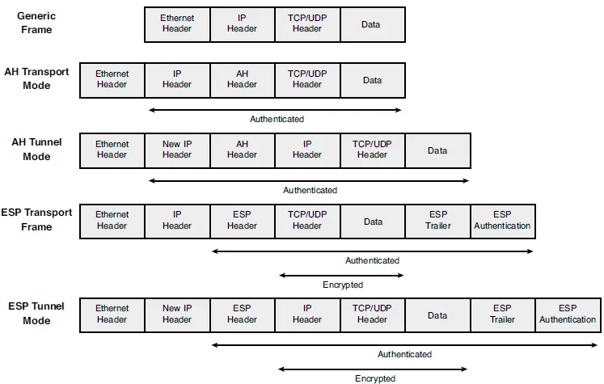

IPsec General Information
Information about IPsec
IPsec is the framework used to secure data. IPsec accomplishes these goals by providing authentication, encryption of IP network packets, key exchange, and key management. VyOS uses Strongswan package to implement IPsec.
Authentication Header (AH) is defined in RFC 4302. It creates a hash using the IP header and data payload, and prepends it to the packet. This hash is used to validate that the data has not been changed during transfer over the network.
Encapsulating Security Payload (ESP) is defined in RFC 4303. It provides encryption and authentication of the data.
- There are two IPsec modes:
- IPsec Transport Mode:
In transport mode, an IPSec header (AH or ESP) is inserted between the IP header and the upper layer protocol header.
- IPsec Tunnel Mode:
In tunnel mode, the original IP packet is encapsulated in another IP datagram, and an IPsec header (AH or ESP) is inserted between the outer and inner headers.


IKE (Internet Key Exchange)
The default IPsec method for secure key negotiation is the Internet Key Exchange (IKE) protocol. IKE is designed to provide mutual authentication of systems, as well as to establish a shared secret key to create IPsec security associations. A security association (SA) includes all relevant attributes of the connection, including the cryptographic algorithm used, the IPsec mode, the encryption key, and other parameters related to the transmission of data over the VPN connection.
IKEv1
IKEv1 is the older version and is still used today. Nowadays, most manufacturers recommend using IKEv2 protocol.
IKEv1 is described in the next RFCs: RFC 2409 (IKE), RFC 3407 (IPsec DOI), RFC 3947 (NAT-T), RFC 3948 (UDP Encapsulation of ESP Packets), RFC 3706 (DPD)
- IKEv1 operates in two phases to establish these IKE and IPsec SAs:
Phase 1 provides mutual authentication of the IKE peers and establishment of the session key. This phase creates an IKE SA (a security association for IKE) using a DH exchange, cookies, and an ID exchange. Once an IKE SA is established, all IKE communication between the initiator and responder is protected with encryption and an integrity check that is authenticated. The purpose of IKE phase 1 is to facilitate a secure channel between the peers so that phase 2 negotiations can occur securely. IKE phase 1 offers two modes: Main and Aggressive.
Main Mode is used for site-to-site VPN connections.
Aggressive Mode is used for remote access VPN connections.
Phase 2 provides for the negotiation and establishment of the IPsec SAs using ESP or AH to protect IP data traffic.
IKEv2
IKEv2 is described in RFC 7296. The biggest difference between IKEv1 and IKEv2 is that IKEv2 is much simpler and more reliable than IKEv1 because fewer messages are exchanged during the establishment of the VPN and additional security capabilities are available.
IKE Authentication
- VyOS supports 3 authentication methods.
Pre-shared keys: In this method, both peers of the IPsec tunnel must have the same preshared keys.
Digital certificates: PKI is used in this method.
RSA-keys: If the RSA-keys method is used in your IKE policy, you need to make sure each peer has the other peer’s public keys.
DPD (Dead Peer Detection)
This is a mechanism used to detect when a VPN peer is no longer active. This mechanism has different algorithms in IKEv1 and IKEv2 in VyOS. DPD Requests are sent as ISAKMP R-U-THERE messages and DPD Responses are sent as ISAKMP R-U-THERE-ACK messages. In IKEv1, DPD sends messages every configured interval. The remote peer is considered unreachable if no response to these packets is received within the DPD timeout. In IKEv2, DPD sends messages every configured interval. If one request is not responded, Strongswan execute its retransmission algorithm with its timers. IKEv2 Retransmission
Childless IKE SA
Control childless IKEv2 SA initiation (RFC 6023 — an IKE SA established without a Child SA).
allow: accept childless IKE SA in responder mode; create a regular IKE SA in initiator mode.prefer: accept and create childless IKE SA in both responder and initiator modes.force: require the use of childless IKE SA in both responder and initiator modes.never: disable support for childless IKE SA when acting as a responder.
Childless IKE SAs require the connection’s ike-group to use
key-exchange ikev2. Otherwise, the commit fails.
Configuration IKE
IKE (Internet Key Exchange) Attributes
VyOS IKE group has the next options:
Defines the action to take if the remote peer unexpectedly closes a CHILD_SA:
none - Set action to none (default),
trap - Installs a trap policy (IPsec policy without Security Association) for the CHILD_SA and traffic matching these policies will trigger acquire events that cause the daemon to establish the required IKE/IPsec SAs.
start - Tries to immediately re-create the CHILD_SA.
Disable MOBIKE (IKEv2 Mobility and Multihoming, RFC 4555) for connections that use this IKE group. MOBIKE is enabled by default and allows a peer to move an IKE SA to a new IP address without re-establishing the tunnel. Disable it if the remote peer does not handle MOBIKE correctly. It has no effect on IKEv1.
Whether rekeying of an IKE_SA should also reauthenticate the peer. In IKEv1, reauthentication is always done. Setting this parameter enables remote host re-authentication during an IKE rekey.
Which protocol should be used to initialize the connection If not set both protocols are handled and connections will use IKEv2 when initiating, but accept any protocol version when responding:
ikev1 - Use IKEv1 for Key Exchange.
ikev2 - Use IKEv2 for Key Exchange.
IKEv1 Phase 1 Mode Selection:
main - Use Main mode for Key Exchanges in the IKEv1 Protocol (Recommended Default).
aggressive - Use Aggressive mode for Key Exchanges in the IKEv1 protocol aggressive mode is much more insecure compared to Main mode.
Dh-group. Default value is 2.
Encryption algorithm. Default value is aes128.
DPD (Dead Peer Detection) Configuration
Action to perform for this CHILD_SA on DPD timeout.
trap - Installs a trap policy (IPsec policy without Security Association), which will catch matching traffic and tries to re-negotiate the tunnel on-demand.
clear - Closes the CHILD_SA and does not take further action (default).
restart - Immediately tries to re-negotiate the CHILD_SA under a fresh IKE_SA.
Keep-alive interval in seconds <2-86400> (default 30).
ESP (Encapsulating Security Payload) Attributes
In VyOS, ESP attributes are specified through ESP groups. Multiple proposals can be specified in a single group.
VyOS ESP group has the next options:
Enables the IPComp(IP Payload Compression) protocol which allows compressing the content of IP packets.
Do not locally initiate a re-key of the SA, remote peer must re-key before expiration.
ESP life in bytes <1024-26843545600000>. Number of bytes transmitted over an IPsec SA before it expires.
ESP life in packets <1000-26843545600000>. Number of packets transmitted over an IPsec SA before it expires.
ESP lifetime in seconds <30-86400> (default 3600). How long a particular instance of a connection (a set of encryption/authentication keys for user packets) should last, from successful negotiation to expiry.
The type of the connection:
tunnel - Tunnel mode (default).
transport - Transport mode.
Whether Perfect Forward Secrecy of keys is desired on the connection’s keying channel and defines a Diffie-Hellman group for PFS:
enable - Inherit Diffie-Hellman group from IKE group (default).
disable - Disable PFS.
<dh-group> - Defines a Diffie-Hellman group for PFS.
Encryption algorithm. Default value is aes128.
Global IPsec Settings
Do not enforce unique IKE identities. By default a new IKE_SA replaces an existing one that uses the same remote identity, and the existing one is closed. With this option set, several IKE_SAs with the same identity can exist at the same time, for example when multiple clients or sites authenticate with the same identity.
The option applies to site-to-site peers, profiles and L2TP/IPsec. A
unique setting on an individual site-to-site peer takes precedence.
It is not used for remote-access connections, which use their own
unique setting.
Interface name to restrict outbound IPsec policies. There is a possibility to specify multiple interfaces. If an interfaces are not specified, IPsec policies apply to all interfaces.
Options
Do not automatically install routes to remote networks.
Allows FlexVPN vendor ID payload (IKEv2 only). Send the Cisco FlexVPN vendor ID payload (IKEv2 only), which is required in order to make Cisco brand devices allow negotiating a local traffic selector (from strongSwan’s point of view) that is not the assigned virtual IP address if such an address is requested by strongSwan. Sending the Cisco FlexVPN vendor ID prevents the peer from narrowing the initiator’s local traffic selector and allows it to e.g. negotiate a TS of 0.0.0.0/0 == 0.0.0.0/0 instead. This has been tested with a “tunnel mode ipsec ipv4” Cisco template but should also work for GRE encapsulation.
Interface Name to use. The name of the interface on which virtual IP addresses should be installed. If not specified the addresses will be installed on the outbound interface.
IKEv2 Retransmission
If the peer does not respond on DPD packet, the router starts retransmission procedure.
The following formula is used to calculate the timeout:
relative timeout = timeout * base ^ (attempts-1)
Number of attempts before the peer is considered to be in the down state. Default value is 5.
Timeout in seconds before the first retransmission. Default value is 4.
Using the default values, packets are retransmitted as follows:
Attempts |
Formula |
Relative timeout |
Absolute timeout |
1 |
4 * 1.8 ^ 0 |
4s |
4s |
2 |
4 * 1.8 ^ 1 |
7s |
11s |
3 |
4 * 1.8 ^ 2 |
13s |
24s |
4 |
4 * 1.8 ^ 3 |
23s |
47s |
5 |
4 * 1.8 ^ 4 |
42s |
89s |
peer down |
4 * 1.8 ^ 5 |
76s |
165s |